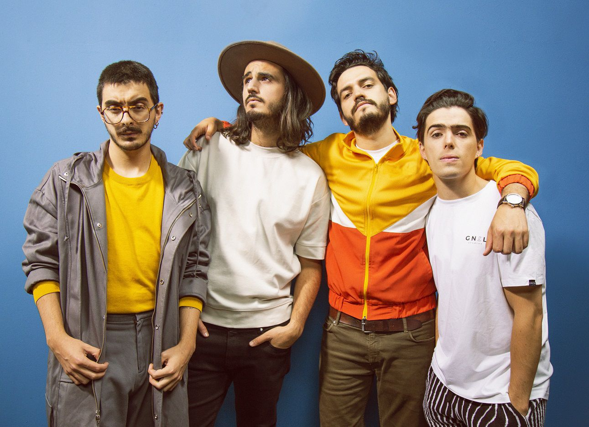

Morat es una banda colombiana de cuatro jóvenes, formada en el 2011, año en el que iniciaron a componer sus canciones, siendo hasta 2015 que lanzaron su primer sencillo "Mi Nuevo Vicio" junto a Paulina Rubio.
Está integrada por Juan Pablo Isaza, Juan Pablo Villamil, Simon Vargas y Alejandro Posada, quien en 2016 fue sustituido por Martin Vargas.
Han grabado 3 discos:
Sobre El Amor Y Sus Efectos Secundarios
Balas Perdidas
¿A Dónde Vamos?
Más ediciones especiales de sus primeros dos discos.
Próximamente lanzarán su cuarto disco, Si Ayer Fuera Hoy.
Gracias a la fama que han conseguido, actualmente están en su gira mundial dando conciertos en países que nunca habían visitado, como Francia, Italia, Portugal, Reino Unido, entre otros.